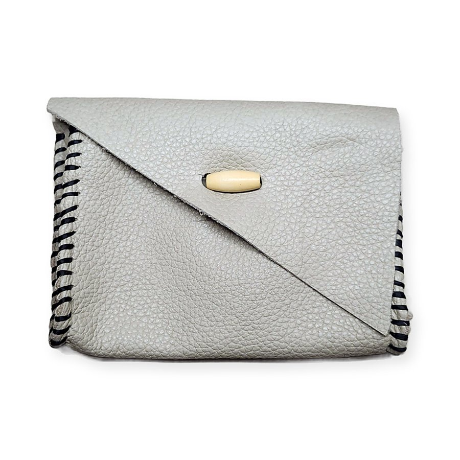
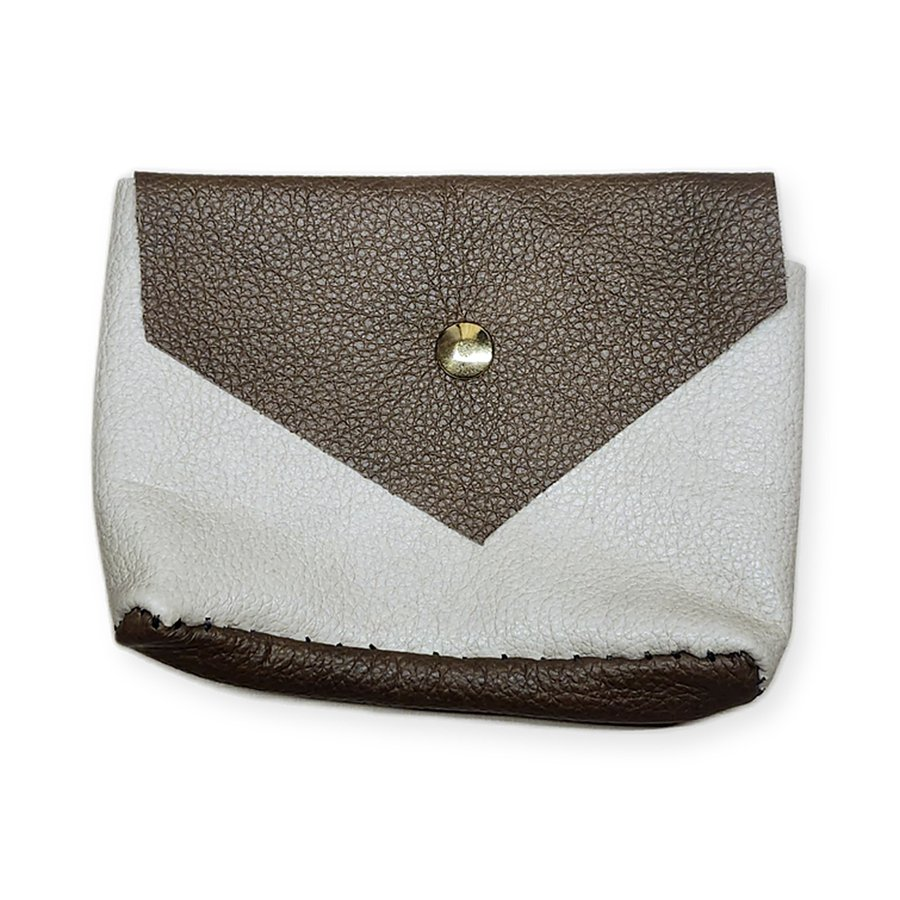
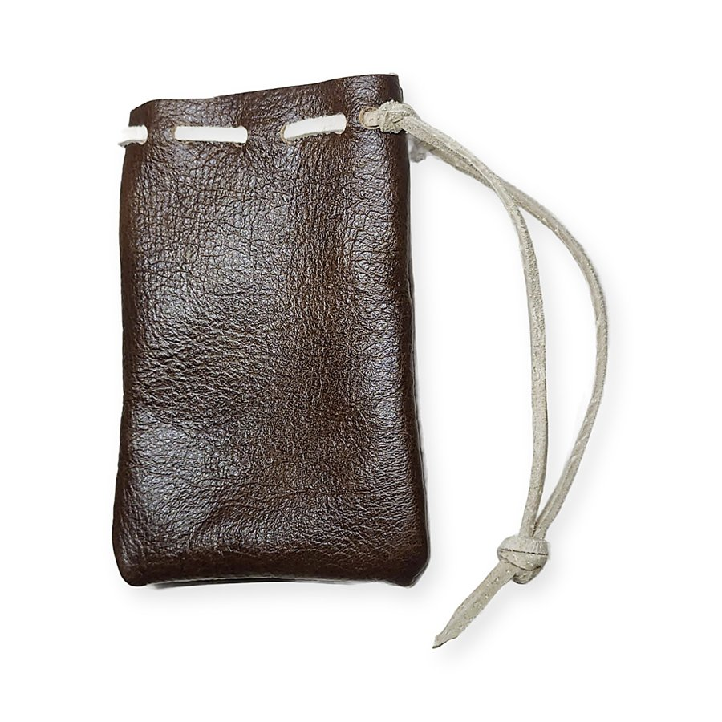
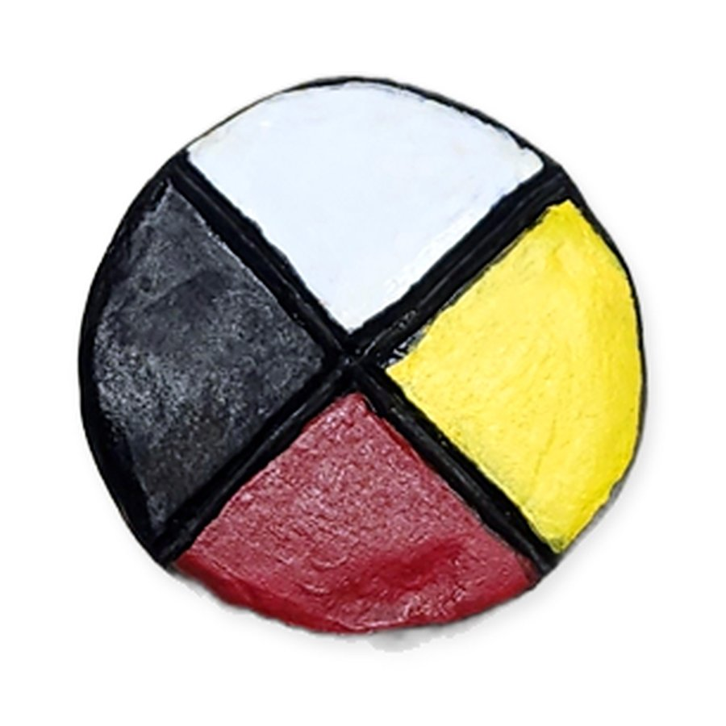
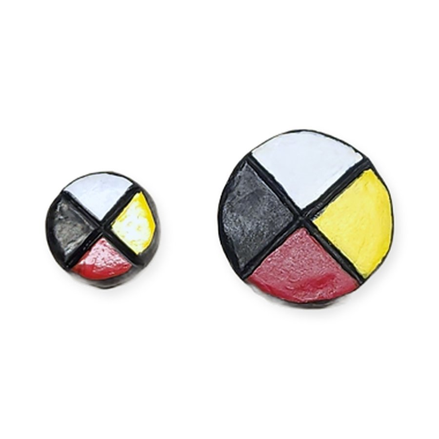
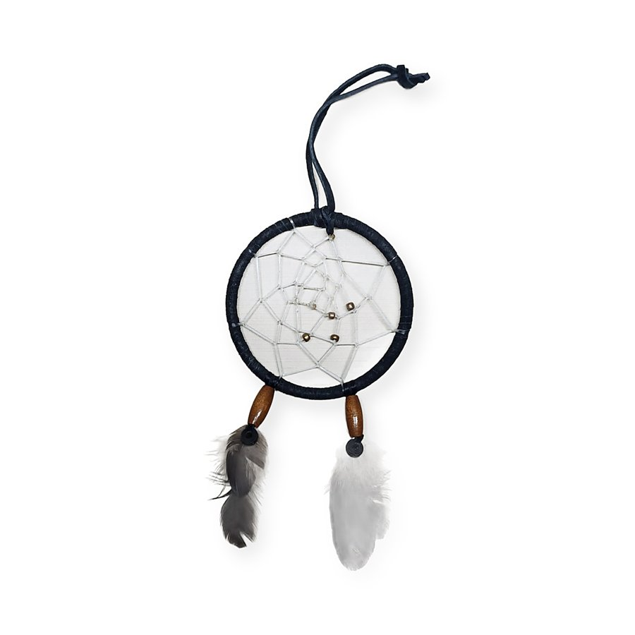
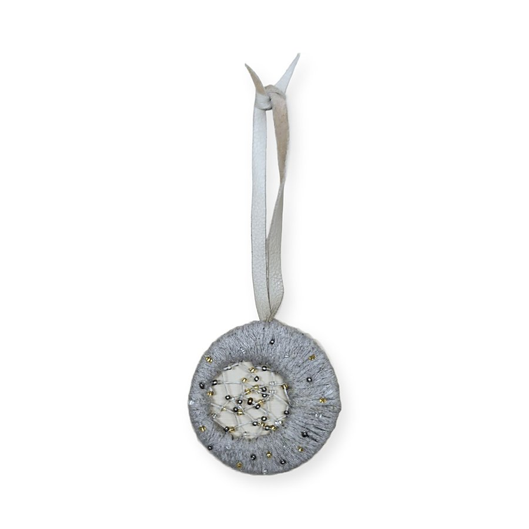

The work

Medicine pouches
Real deer hide with a long tie. Small and fringed styles.

Drumsticks
Deer hide heads on painted, wrapped handles.

Envelope pouch
Grey leather, whip-stitched edges, bead toggle.

Snap flap pouch
Two-tone leather with a brass snap.

Drawstring bag
Brown leather, cream lace.

Lighter cases
Plain and fringed, in several colours.

Fish keychains
Blue leather with stitched details.

Medicine wheel magnets
Hand-shaped clay, painted and glossed.

Two sizes
Small and large medicine wheel magnets.

Feather dreamcatcher
Wrapped hoop, beaded web, hanging feathers.

Mini beaded dreamcatcher
Cord-wrapped ring with gold, gunmetal and clear seed beads.
Custom orders
Pouches & bags
Medicine pouches, drawstring bags, envelope and snap pouches, sized to what you carry.
Cases & covers
Lighter cases and other fitted cases, plain or fringed.
Drumsticks
Hide-headed beaters with handles wrapped in your colours.
Small goods
Keychains, tags and little gifts.
Magnets & dreamcatchers
Medicine wheel magnets and dreamcatchers, made to order.
Repairs
Torn stitching, worn laces, broken snaps and tired leather goods mended. Send a photo and I'll tell you what I can do.
Your choices
Leather colour, stitching, fringe, beads and hardware.
Something else
If it can be cut and stitched from leather, ask. I'm happy to talk it through.
Contact me
Every order or repair starts with an email.
- What you'd like made or fixed
- Rough size, colours and any details
- When you need it by